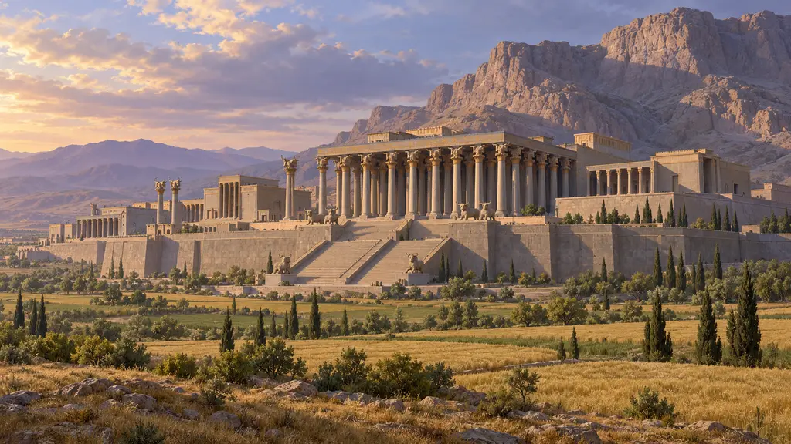
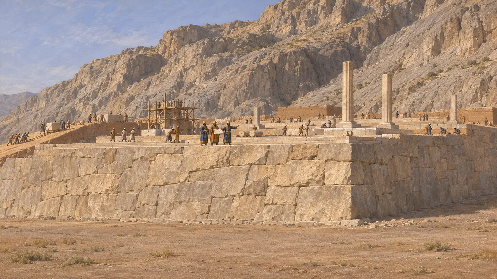
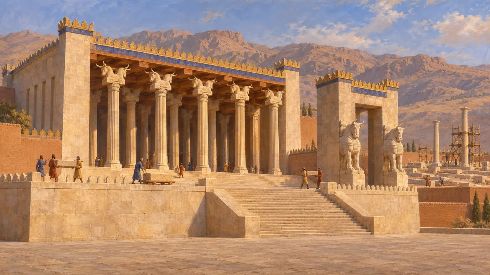
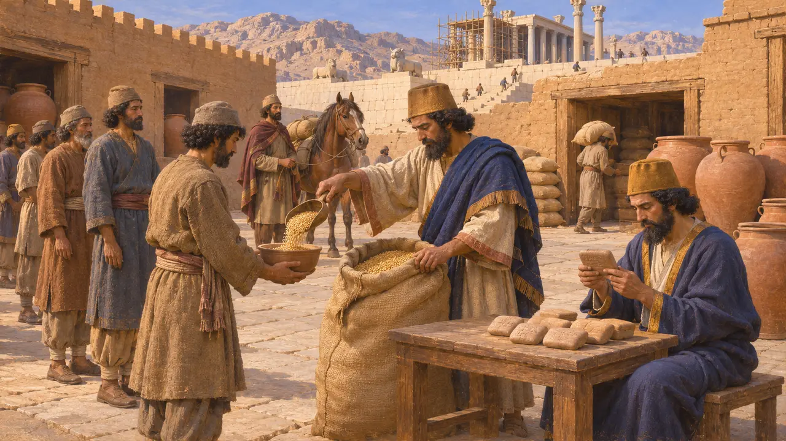
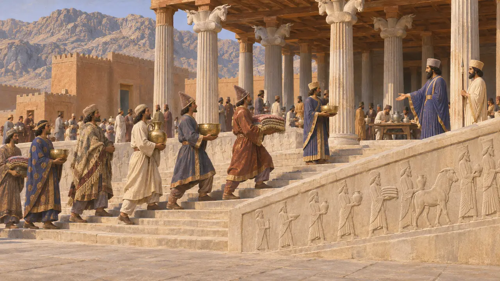
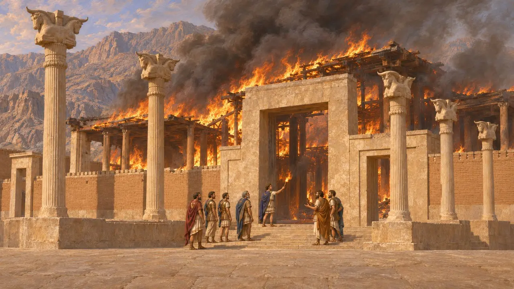

Persepoli (Parsa)
Città palaziale su terrazza di Dario in Perside, iniziata intorno al 518 a.C.
Nel gioco: Livello 4: La Terrazza, Livello 5: La Carta, Micale
Persepoli, in antico persiano Parsa, fu la città-palazzo che Dario I fondò su una terrazza di pietra ai piedi del Kuh-e Rahmat, il Monte della Misericordia, nella Perside. Serse e i re successivi vi aggiunsero sale e porte per oltre un secolo, e le sue tavolette d'argilla sono la più ricca testimonianza superstite di come l'economia del Re in Perside nutrisse e retribuisse i suoi lavoratori. Alessandro ne diede alle fiamme i palazzi nel 330.
Nel gioco: Il livello di Parsa è ambientato nel 521 a.C., qualche anno prima della data a cui di solito si fa risalire l'inizio dei lavori sulla terrazza, intorno al 518 a.C. Costruire lì nel 521 a.C. anticipa leggermente l'inizio rispetto a quanto suggeriscono le testimonianze.

Una terrazza addossata alla montagna
Nelle fontiDario fece livellare e cingere di mura contro la montagna una piattaforma di circa 12 ettari, probabilmente a partire dal 518-515 a.C. circa. Le iscrizioni sul muro meridionale lo nominano, e un testo elamita (DPf) afferma che qui fu costruita una fortezza dove prima non ne era mai sorta alcuna. Tavolette di fondazione d'oro e d'argento (DPh) furono rinvenute nel 1933 in cassette di pietra sotto gli angoli dell'Apadana. Descrivono l'estensione del suo regno.
DPf; DPh; E. Schmidt, Persepolis I, 1953

Re che continuarono a costruire
Nelle fontiL'Apadana era una sala di 36 colonne, usata probabilmente per le udienze reali. Iniziata da Dario, fu completata sotto Serse. Serse aggiunse la Porta di tutte le Nazioni, la cui iscrizione (XPa) lo nomina, e avviò la Sala delle Cento Colonne, completata sotto Artaserse I. I lavori sulla terrazza proseguirono in qualche forma fino alla fine della dinastia.
XPa; E. Schmidt, Persepolis I, 1953

Tavolette dei lavoratori del Re
Nelle fontiNel 1933 gli archeologi di Chicago rinvennero nel muro di fortificazione migliaia di tavolette d'argilla, per lo più in elamita e alcune in aramaico. Registrano le razioni distribuite tra il 509 a.C. e il 493 a.C. a lavoratori, viaggiatori sulle strade e cavalli, e per le offerte agli dèi. I pagamenti avvenivano in orzo, farina, vino e birra. Un gruppo più tardo proveniente dal Tesoro, datato tra il 492 a.C. e il 458 a.C., registra argento versato agli artigiani in luogo di parte delle loro razioni.
R. Hallock, Persepolis Fortification Tablets, 1969; G. Cameron, Persepolis Treasury Tablets, 1948

A che cosa serviva la terrazza
ContesoLe scalinate dell'Apadana mostrano delegazioni di popoli sudditi che recano doni al Re. Alcuni studiosi interpretano la terrazza come lo scenario di una festa annuale, forse il capodanno. Altri osservano che nessun testo antico nomina una simile festa e che le tavolette mostrano un centro amministrativo e residenziale molto attivo. Erodoto non menziona mai Persepoli, e gli scrittori greci sembrano averne saputo ben poco prima di Alessandro.
P. Briant, From Cyrus to Alexander, 2002

L'incendio del 330
ContesoArriano afferma che Alessandro incendiò i palazzi deliberatamente, contro il parere di Parmenione, per vendicare l'incendio dei templi ateniesi da parte dei Persiani nel 480 a.C. Diodoro descrive il saccheggio della città e un banchetto durante il quale la cortigiana ateniese Taide spinse il re ad appiccare il fuoco. Gli storici discutono ancora se l'incendio sia stato un atto politico o un gesto da ubriachi. Strati di bruciato si conservano nel Tesoro e nelle sale.
Arrian, Anabasis 3.18; Diodorus 17.70-72
Fonti
- E. Schmidt, Persepolis I, 1953
- R. Hallock, Persepolis Fortification Tablets, 1969
- G. Cameron, Persepolis Treasury Tablets, 1948
- Arrian, Anabasis 3.18
- Diodorus 17.70-72
- P. Briant, From Cyrus to Alexander, 2002